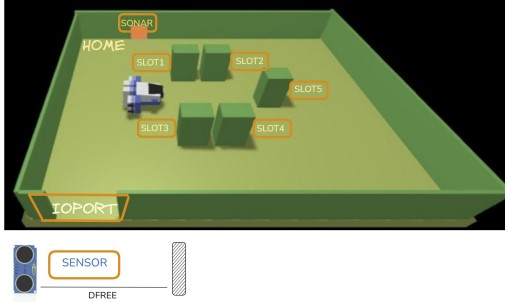

Introduction
A Maritime Cargo shipping company (fron now on, simply company) intends to automate the operations of load of containers in the ship's cargo hold (or simply hold). To this end, the company plans to employ a Differential Drive Robot (from now, called cargorobot).
The hold is a rectangular, flat area with an Input/Output port (IOPort). The area provides 4 slots to store the containers and a slot named slot5.
In the picture above:
• The slots1-4 depict the hold areas reserved to store one container each,
• The slots5 depicts an area, where the cargorobot must temporarily store a container, before to place it in one of the slots1-4. During temporary storage, a 'marker' device labels the container with an identification barcode and signals when this marking activity is completed.
• The IOPort is a device with a pushbutton and a display. The pushbutton is pressed by the customer in order to send a request to load a container on the cargo. The display is used to show the answer to the request and to show the current state of the hold.
• The sensor associated to the IOPort is a device (a sonar) used to detect the presence of a container, when it measures a distance D, such that D < DFREE/2, during a reasonable time (e.g. 3 secs).
The hold is a rectangular, flat area with an Input/Output port (IOPort). The area provides 4 slots to store the containers and a slot named slot5.

In the picture above:
• The slots1-4 depict the hold areas reserved to store one container each,
• The slots5 depicts an area, where the cargorobot must temporarily store a container, before to place it in one of the slots1-4. During temporary storage, a 'marker' device labels the container with an identification barcode and signals when this marking activity is completed.
• The IOPort is a device with a pushbutton and a display. The pushbutton is pressed by the customer in order to send a request to load a container on the cargo. The display is used to show the answer to the request and to show the current state of the hold.
• The sensor associated to the IOPort is a device (a sonar) used to detect the presence of a container, when it measures a distance D, such that D < DFREE/2, during a reasonable time (e.g. 3 secs).
Sprint 0 Goal
Engage with the stakeholder to:
- Precisely and unambiguously define (formalize) the requirements of the system to be developed;
- Outline an initial (executable) model of the system;
- Establish a preliminary set of functional Test Plans based on the requirements model;
- Identify the subset of requirements that will constitute the goal for Sprint 0.
Requirements
The company asks us to build service named cargoservice that should work as follows.
The cargoservice is able to receive a request to load a container sent by some customer by using the pushbutton of the IOPort.
• It sends the answer retrylater, if the IOPort is currently occupied by a container or if the system is Out of service
• It rejects the request when the hold is already full, i.e. the slots1-4 are already occupied.
• Otherwise, it considers the system as engaged, detects a free slot and returns as answer the name of such a reserved slot. While engaged, the system must blink a Led.
When the request to load is accepted, the customer must move the container in the sensor area within prefixed amount of time (e.g. 30 secs), otherwise the systems becomes disengaged. Then, the cargoservice uses the cargorobot to move the container from the IOPort to the slot5 (for marking the container) and then to the reserved slot.
The service must also show on the display on the IOPort:
• the current state of the hold
• the message 'Service working', when it is all is going well
• the message 'Out of service' if the sonar sensor measures a distance D > DFREE for at least 3 secs (perhaps a failure of the sonar).
The cargoservice is able to receive a request to load a container sent by some customer by using the pushbutton of the IOPort.
• It sends the answer retrylater, if the IOPort is currently occupied by a container or if the system is Out of service
• It rejects the request when the hold is already full, i.e. the slots1-4 are already occupied.
• Otherwise, it considers the system as engaged, detects a free slot and returns as answer the name of such a reserved slot. While engaged, the system must blink a Led.
When the request to load is accepted, the customer must move the container in the sensor area within prefixed amount of time (e.g. 30 secs), otherwise the systems becomes disengaged. Then, the cargoservice uses the cargorobot to move the container from the IOPort to the slot5 (for marking the container) and then to the reserved slot.
The service must also show on the display on the IOPort:
• the current state of the hold
• the message 'Service working', when it is all is going well
• the message 'Out of service' if the sonar sensor measures a distance D > DFREE for at least 3 secs (perhaps a failure of the sonar).
Requirement analysis
The nature of the system
Before modelling the single entities, it is worth reflecting on the nature of the system that the requirements imply.Is the software concentrated or distributed? It cannot be a single, concentrated program. The requirements describe parts that live and act independently: the IOPort devices (pushbutton, display, LED), the sonar, the business logic of cargoservice, and the robot. These parts do not share memory; they need to cooperate, possibly across the network, operating on different nodes. The system is therefore inherently distributed.
Is the software heterogeneous? Yes. The parts that need to be developed are really different both in characteristics and in the way they need to be hosted, therefore different languages, protocols and execution environments must coexist and interoperate.
How many nodes are needed to deploy it? A first, rough estimate, to be refined in design, is at least 3 nodes:
- Pico W: the node on which the sonar and the LED will be physically placed and their business logic will run;
- IO Port: the node on which the IO Port web-gui and logic will run;
- CargoService: the node that will actually implement the logic of the robot, the logic to control it and the logic to make it do move containers as the client intended it to.
To formalize nodes we can define the following QAK contexts (see the next paragraph to know about the qak modelling language). It has been established that to be more complete in the representation 4 nodes are more suitable for the application that has been issued.
Context ctxcargoservice ip [host="localhost" port=8020] // context to run the cargoservice logic Context ctxioport ip [host="localhost" port=8021] // context to run the ioport Context ctxrobot ip [host="localhost" port=8022] // context to run the actual robot Context ctxdevices ip [host="localhost" port=8023] // context to run the PICOW ioport components
As per the entities that need to be formalized by the requirements analysis they're summurized inside the following table:
| Entity | Type | Context |
|---|---|---|
| IContainer / Container | POJO | N/A |
| ISlot / Slot | POJO | N/A |
| IHold / Hold | POJO | N/A |
| IDisplay / Display | POJO | N/A |
| HoldState | enum | N/A |
| cargoservice | service (QActor) | ctxcargoservice |
| cargorobot | actor | ctxrobot |
| ioport | actor | ctxioport |
| sonar | actor | ctxdevices |
| led | actor | ctxdevices |
| load_request | request message | ctxioport → ctxcargoservice |
| load_accepted | reply message | ctxcargoservice → ctxioport |
| retrylater | reply message | ctxcargoservice → ctxioport |
| load_refused | reply message | ctxcargoservice → ctxioport |
| reachTarget | request message | ctxcargoservice → ctxrobot |
| targetReached | reply message | ctxrobot → ctxcargoservice |
| targetUnreachable | reply message | ctxrobot → ctxcargoservice |
| ctxcargoservice | context | ctxcargoservice |
| ctxioport | context | ctxioport |
| ctxrobot | context | ctxrobot |
| ctxdevices | context | ctxdevices |
Why qak
As we said the project needs to be distributed, heterogeneous and lots of different components need to cooperate as Actors, services, pojos or normal variables.Java is not built for the purpose of representing these kind of elements, it was born as a general-purpose programming language and, so, it lacks the expressive power to state the concepts of distributed systems (actors, services, ...) directly: expressing them in plain Java would require large amounts of boilerplate code that would pollute the representation of the elements.
Fortunately, our software house, has already developed in-house a modelling language designed for this purpose, QAK, which lets us express these concepts in a simple, compact and expressive way, turning them into first-class entities of the language.
In short, how qak works: it is a modelling language built around QActors. The "Q" stands for "quasi", because the actor is the reference paradigm but the same construct can also play other roles (a nano-service inside a single JVM, a microservice over TCP or MQTT, a CoAP resource). Each QActor is modelled as a Moore finite-state machine: its outputs depend on its current state, and its transitions can be driven both by autonomous internal decisions and by the arrival of messages. QActors interact only by exchanging messages. Underneath, qak is realized on top of Kotlin, the "k" in qak, with each QActor running as a Kotlin coroutine.
Formalization of Messages and interactions of the components inside the system:
Source code on GitHubSystem cargoservice // QAK requirements analysis // Made by: //Alessandro Marcellini //Alessandro Villani // request for cargoservice Request load_request : load_request(none) // reply to ioport Reply load_accepted : load_accepted(SLOTID) for load_request Reply retrylater : retrylater(HOLDSTATE) for load_request Reply load_refused : load_refused(none) for load_request Context ctxcargoservice ip [host="localhost" port=8020] Context ctxioport ip [host="localhost" port=8021] Context ctxrobot ip [host="localhost" port=8022] Context ctxdevices ip [host="localhost" port=8023]
Formalization of Macro-components
- CONTAINER: A container is a rectangular box, with a barcode label.
We could model it as a Plain Object (POJO) with the following attributes:
- barcode: a numeric string that uniquely identifies the container;
- length (LC): a integer value that represents the length of the container;
- width (WC): a integer value that represents the width of the container.
Questions to Client:
- Which is the length of the barcode of a container?
- Can we assume the dimensions of a container as integers?
Answers from Client:- The barcode of a container is 10 digits long.
- Yes, we can assume the dimensions of a container as integers.
Note: we could avoid representing the container as its features are not really important for the implementation of the system. For representation purposes and for completeness of the analysis of the requirements only we still represent and formalize what a container is in our system.
Source code on GitHubpublic interface IContainer { public String getBarcode(); public int getLength(); public int getWidth(); } - SLOT: A slot is a rectangular area, with the same length (LC) and width (WC) dimensions of a container, and can be occupied by a container.
It is modeled as a Plain Java Object (POJO) with the following attributes:
- id: a number from 0 to 5 that uniquely identifies the slot If the id equals 0, the slot represents a generic area of the hold. If the id equals 1,2,3,4, the slot represents one of the four areas of the hold reserved to store a container. If the id equals 5, the slot represents the area of the hold reserved to temporarily store a container, before to place it in one of the slots1-4.
- content: a reference to the container currently occupying the slot, or null if the slot is empty
Note: ISlot is an extension of the more generic ICell. This is made to facilitate the representation of the hold (next formalized element in the document).
Questions to Client:
- Where is the marker device positioned? Do we need to consider it embedded in slot5?
Answers from Client:- The functioning of the marker device can be emulated by a standard delay of 5 seconds in the container movement logic.
public enum CellType { FREE, OBSTACLE, HOME, IOPORT, SLOT } public interface ICell { public CellType getType(); // gets the type of the cell } public interface ISlot extends ICell { public int getId(); // from 1 to 5 public IContainer getContent(); public void setContent(IContainer container); } - STATE OF THE HOLD: The state of the hold describes the current state of the hold, and it is shown on the display of the IOPort.
It is modeled as an enumerative type with the following values:
- OUT_OF_SERVICE: the hold is out of service;
- ENGAGED: the hold is engaged in a load operation;
- DISENGAGED: the hold is disengaged from a load operation.
Source code on GitHubpublic enum HoldState { ENGAGED, DISENGAGED, OUT_OF_SERVICE } - HOLD: A hold is a rectangular area where the cargorobot can move containers, with 4 slots reserved to permanently store containers and one slot reserved for temporary storage until the marker device has done its job.
The Hold can be modeled as Plain Java Object (POJO) with the following attributes:- a logical grid of cells of size LC x WC, where each one of them is a Cell or a Slot identified by a pair of coordinates (i,j);
- state of the hold.
Source code on GitHubpublic interface IHold { public ICell[][] getHold(); public ICell getCell(int i, int j); public HoldState getState(); public void setState(HoldState state); public void setCell(int i, int j, ICell cell); public ISlot nextFreeSlot(); // if returns null, all slots are taken } public class Hold implements IHold { private ICell[][] hold = new ICell[7][7]; private HoldState currentState = HoldState.DISENGAGED; public Hold() { for (int i = 0; i < 7; i++) { for (int j = 0; j < 7; j++) { hold[i][j] = new Cell(CellType.FREE); } } // HOME hold[0][0] = new Cell(CellType.HOME); // SLOT hold[2][1] = new Slot(1); hold[5][1] = new Slot(2); hold[2][3] = new Slot(3); hold[5][3] = new Slot(4); hold[6][2] = new Slot(5); // OSTACOLI hold[3][1] = new Cell(CellType.OBSTACLE); hold[4][1] = new Cell(CellType.OBSTACLE); hold[3][3] = new Cell(CellType.OBSTACLE); hold[4][3] = new Cell(CellType.OBSTACLE); hold[5][2] = new Cell(CellType.OBSTACLE); // IOPORT hold[1][6] = new Cell(CellType.IOPORT); } // ... implement the methods of the IHold } - CARGOROBOT: The cargorobot is a differential drive robot (DDR) that can move containers across the hold. It can move forward, backward, rotate, and stop; these actions are meant as commands.
Questions to Client:
- Do we need to design and implement the ddr from scratch or do we have access to a ready-to-use solution?
Answers from Client:- The implementations provided by us are the following:
- VirtualRobot (WEnv): the simulator; it receives concrete movement commands (cril) over HTTP (synchronous) and WebSocket (asynchronous), and streams back the robot/sensor state.
Reference implementation provided by the committente: Protobook — VIRTUALROBOT26.
- RobotObj: a Java object that hides the network, translating method calls into cril commands sent to VirtualRobot.
Reference implementation provided by the committente: Protobook — ROBOTOBJ26.
- RobotService26: a service (QActor) that wraps RobotObj and re-exposes robot control as message-based operations (abstract aril commands such as move / cmd / step) plus streamed events (e.g. sonardata).
Reference implementation provided by the committente: Protobook — ROBOTSERVICE26.
- RobotSmart26:
Reference implementation provided by the committente: Protobook — ROBOTSMART26.
- VirtualRobot (WEnv): the simulator; it receives concrete movement commands (cril) over HTTP (synchronous) and WebSocket (asynchronous), and streams back the robot/sensor state.
The requirement names one and only one robot entity, the cargorobot, and it is explicit about who orchestrates the movements:"the cargoservice uses the cargorobot to move the container from the IOPort to the slot5 (for marking the container) and then to the reserved slot."
So the sequence of moves (IOPort → slot5 → reserved slot, with the marking stop in between) is decided by the business logic — by cargoservice, which owns the hold and therefore already knows the reserved slot. The cargorobot is not asked where to go; it is asked to reach a target chosen by the business logic. This yields one sharp split of responsibilities:- cargoservice (business logic): decides the sequence of moves (from one station to the next) and waits for the marking, exactly as the requirement sentence dictates;
- cargorobot (robot actor): given one target at a time, brings the robot to it and reports success or failure. How it reaches the target (route computation, elementary moves) is internal to the robot and is deferred to Problem analysis / Design.
The abstract contract of the cargorobot is therefore a single goal-level request with its correlated replies:
// cargoservice --> cargorobot : "reach this target station" Request reachTarget : reachTarget(TARGET) "bring the robot to the TARGET station" Reply targetReached : targetReached(TARGET) for reachTarget Reply targetUnreachable : targetUnreachable(TARGET) for reachTarget QActor cargorobot context ctxrobot { State s0 initial { println("[CARGOROBOT] ready, waiting for reach-target goals from cargoservice") color yellow } Goto waiting State waiting { } Transition t0 whenRequest reachTarget -> reaching State reaching { // Abstract behaviour only: the concrete route + elementary moves are // delegated to the reused robot subsystem (see next section and Design). onMsg( reachTarget : reachTarget(Target) ) { println("[CARGOROBOT] reaching target $Target ...") color yellow replyTo reachTarget with targetReached : targetReached(Target) } } Goto waiting }
With this contract cargoservice performs the loading trip by issuing reachTarget once per move — to the IOPort, then to slot5, then (after the ~5 s marking delay) to the reserved slot, then back to HOME — each move confirmed by the targetReached reply before the next one is sent. The two actors' behaviour as Moore FSMs belongs to Problem analysis and is not anticipated here.
Which of the solutions provided by the committente is the most suitable for our system?
The committente offers four ready-made assets stacked on top of each other. The right question is not "which is the most advanced" but "which one already provides what our cargorobot contract (reachTarget(TARGET)) needs, so that we do not re-build it". Evaluated against that contract:
Asset What it provides What we would still have to build Verdict VirtualRobot (WEnv) The robot simulator itself. It understands only low-level movement commands (turn, step) sent over the network (HTTP / WebSocket) and reports back the robot position and sensor readings. Everything on top: speaking its protocol, working out the route to a destination, keeping a map of the environment, and turning that route into single moves. Too low-level: it is the simulator the other three are built on, not something we would talk to directly. Rejected. RobotObj A Java object that wraps the network: we call its methods and it forwards the low-level commands to the simulator. Working out the route, keeping the map and coordinating the moves are still on us — and it is a plain object, not something that talks by messages the way our actors do. It hides the network, not the decision-making. Rejected. RobotService26 An actor (QActor) wrapping RobotObj: it re-exposes robot control as messages (single moves such as forward / turn / step) and streams sensor events. Still no route-planner and no map: to carry out a command like "go to slot5" we would have to work out the route and send every single move ourselves. Message-based, so it fits qak well, but still too low-level for a "go to a place" command. Rejected. RobotSmart26 Adds the two missing pieces — an automatic route-planner (A*) and a map of the environment — behind one high-level command, moverobot(X, Y, stepTime) = "go to this point". It also offers helpers (build a route, set / read the robot position, return home) and streams a sensor alarm. Only a small translation from our named places (IOPort, slot5, reserved slot) to the (X, Y) coordinates it expects. Chosen.
Why RobotSmart26
Our abstract cargorobot needs exactly one thing: "reach a target". RobotSmart26's moverobot(X,Y) is that operation — it reads the current position, builds the route with A*, executes it move-by-move, and replies done/failed. The match with our contract is nearly one-to-one, so cargorobot reduces to a thin adapter that translates a domain target (IOPort, slot5, reserved slot) into the coordinates moverobot expects. This is reuse with a stated reason, not a blind copy: everything the simpler assets would force us to write — the route-planner, the map, and issuing the individual moves — is exactly what RobotSmart26 already provides.
- SONAR:
Source code on GitHub
// The sonar cannot sense on its own. When the user engages the system and // places the container, cargoservice informs the sonar of its position (X,Y). // The sonar computes the distance D and decides: // - D > DFREE sustained 3s => sonar failure => Out of service. Context ctxcargoservice ip [host="localhost" port=8020] Context ctxdevices ip [host="localhost" port=8023] QActor sonar context ctxdevices { [# val DFREE = 3 var CurrD = 0 #] State waiting initial { println("[SONAR] ready!") color yellow } Goto measureDistance State measureDistance { println("[SONAR] measuring distance...") color yellow [# CurrD = Random.nextInt(0, 6) #] if [# currD > DFREE #] { delay 3000 // if after 3 seconds it is still > currD [# CurrD = Random.nextInt(0, 6) #] if [# currD > DFREE #] { println("[SONAR] sonar error, hold is out of service") } } else { if [# CurrD < DFREE / 2 #] { println("[SONAR] measured distance acceptable, container has been positioned.") } } } Goto waiting } - I/O PORT: A composite component that groups the pushbutton, the display and the sonar into the single web-gui interface between the customer and cargoservice.
It is the system's entry point for the client to interact with the system.
PUSH BUTTON: An input device, inside the I/O PORT, that can be pressed by the customer to send a load request to the system. It is an active entity (an event source): a physical press is turned into a loadRequest that cargoservice reacts to. It is modelled inside the ioport Actor.
DISPLAY: A passive output device that shows the current state of the hold and the text messages ('Service working', 'Out of service'). It is modelled as a POJO with an interface, injected into the business logic so the logic does not depend on a concrete display. Source code on GitHubpublic interface IDisplay { public void setState(String msg); public void setBookedSlot(int id); public String getState(); public int getBookedSlotId(); }
The Actual IOPort logic is represented as a QActor, embedding these 2 elements. Source code on GitHub// request for cargoservice Request load_request : load_request(none) // reply to ioport Reply load_accepted : load_accepted(SLOTID) for load_request Reply retrylater : retrylater(HOLDSTATE) for load_request Reply load_refused : load_refused(none) for load_request QActor ioport context ctxioport { [# IDisplay display = new Display(); #] State s0 initial { // simulating load request from push button // disabled in Sprint 0: the test client is the only actor that drives // cargoservice, so that TP0.1 is not raced by a spontaneous ioport request // delay 10000 request cargoservice -m load_request : load_request(none) } Goto work State work { println("[IOPORT] customer pressed pushbutton") request cargoservice -m load_request : load_request(none) } Transition t0 whenReply load_accepted -> accepted whenReply retrylater -> retrylater whenReply load_refused -> refused State accepted { println("[IOPORT] DISPLAY: load_accepted received") color green onMsg( load_accepted : load_accepted(slotId)) { [# display.setBookedSlot(slotId) #] [# display.setState("load accepted, system enganged") #] } } Goto work State retrylater { println("[IOPORT] DISPLAY: retrylater received") color yellow onMsg( retrylater : retrylater(CurrentHoldState)) { if [# CurrentHoldState == HoldState.ENGAGED #] { [# display.setState("retry later, another request is being served...") #] } else { [# display.setState("retry later, the hold is currently out of service...") #] } } } Goto work State refused { println("[IOPORT] DISPLAY: load_refused received, all slots are occupied") color red [# display.setState("refused, the hold' slots are all occupied.") #] } Goto work } - LED: A passive output device. While the system is engaged it must blink for the customer window (~30s), then stop when the container is placed in the sensor area or the window expires.
Being passive, the LED does not own the timing: the 30s window is the same timeout that turns the engaged system into disengaged, owned by cargoservice, which starts and stops the blinking.
Source code on GitHub
QActor led context ctxdevices { State s0 initial { } Goto work State work{ println("[LED] switching led off or on based on the hold state") color green } } - CARGOSERVICE: This service needs to be built from scratch.
It hosts the business logic of the actual application: it receives the load request from the pushbutton, produces the answer (retrylater / reject / the name of the reserved slot), manages the engagement and the 30s window, drives the LED and the display, informs the sonar of the container position, and commands the cargorobot (IOPort → slot5 → reserved slot). It has no passive data nature: it is an active entity whose lifecycle is a state machine. Its behaviour (states, transitions, timeouts) is not a requirement-analysis concern and is formalized in Problem analysis; here it is only named and its responsibilities and interactions delimited. Source code on GitHub// request for cargoservice Request load_request : load_request(none) // reply to ioport Reply load_accepted : load_accepted(SLOTID) for load_request Reply retrylater : retrylater(HOLDSTATE) for load_request Reply load_refused : load_refused(none) for load_request QActor cargoservice context ctxcargoservice { [# var hold = it.unibo.hold.Hold() #] State s0 initial { println("[CARGO SERVICE] started") color blue } Goto waiting State waiting { println("[CARGO SERVICE] DISENGAGED: waiting for load_requests") color green } Transition t0 whenRequest load_request -> handle_load_request State handle_load_request { println("[CARGO SERVICE] evaluating load request...") color cyan if [# ( var CurrentHoldState = hold.getState()) != HoldState.DISENGAGED #] { // another container is being moved, retry later println("[CARGO SERVICE] another container is being moved, replying with RETRY LATER.") color cyan replyTo load_request with retrylater : retrylater(CurrentHoldState) } if [# (var SlotToFill = hold.nextFreeSlot()) == null #] { // all slots are taken, refuse request println("[CARGO SERVICE] all slots are taken, replying with REFUSED.") color cyan replyTo load_request with load_refused : load_refused(none) } else { println("[CARGO SERVICE] setting holdstate to ENGAGED, replying with ACCEPTED and waiting for sonar message.") color cyan [# hold.setState(HoldState.ENGAGED) #] [# var intSlotToFill = SlotToFill.getId() #] replyTo load_request with load_accepted : load_accepted(intSlotToFill) delay 5000 // simulating sonar signal reception, just for requirements analysis purposes // in the real case it will wait for the event "containerPositioned" // if the sonar goes into fault then switch the hold state to "Out of service" // [# hold.setState(HoldState.OUTOFSERVICE) #] println("Make the robot work to load the container in the designated spot") // when the robot has done its work Goto switch to disengaged } } State switch_to_disengaged { [# hold.setState(HoldState.DISENGAGED) #] } Goto waiting }
Test plans
The testplan is based on the executable model cargo_service_sprint0_mock.qak. It can be found here
The Sprint 0 requirements describe only the behaviour that cargoservice must expose in response to a load request, without saying anything about how its collaborators or its internal logic are implemented. The test plan is therefore limited to the functional cases that can be deduced directly from the requirements and that are already captured in our model: the three possible answers to a load request, that is load_accepted, load_refused and retrylater.
To run a case automatically we need to bring the system into a known starting condition and then read the answer it produces. Reading the answer is straightforward, because it travels back on the same request/reply channel that a test client can open towards cargoservice. Preparing the starting condition is not always possible in this sprint: the state of the hold (its occupancy and whether it is disengaged, engaged or out of service) lives inside cargoservice and cannot yet be set from the outside. For this reason only the case whose starting condition coincides with the natural startup state of the system, an empty hold with the hold disengaged, can be checked automatically now. The other two cases are described here as well, but their automation is postponed to Sprint 1, when cargoservice will be made observable and its state controllable from a test.
All tests use cargoservice as the component under test, reachable on its context ctxcargoservice at host localhost and port 8020. The test client plays the role of the IOPort and sends the request load_request(none), then reads the reply.
Writing the first case as "exactly one answer" also serves to reveal a defect in the current handle_load_request logic: its three cases are written as separate, sequential checks rather than as mutually exclusive alternatives, so after replying with retrylater the execution continues into the next check and a single request may produce a second answer. The correction, using mutually exclusive branches, is scheduled for Sprint 1.
Automated test source (TP0.1). The JUnit test that plays the role of the IOPort boundary — it opens a TCP client towards ctxcargoservice on localhost:8020, sends the modelled load_request(none) and asserts the specific reply (deliberately written so that a wrong branch, load_refused / retrylater, turns the test red) — is in the file test/it/unibo/test/TestPlanSprint0.kt (view on GitHub).
The Sprint 0 requirements describe only the behaviour that cargoservice must expose in response to a load request, without saying anything about how its collaborators or its internal logic are implemented. The test plan is therefore limited to the functional cases that can be deduced directly from the requirements and that are already captured in our model: the three possible answers to a load request, that is load_accepted, load_refused and retrylater.
To run a case automatically we need to bring the system into a known starting condition and then read the answer it produces. Reading the answer is straightforward, because it travels back on the same request/reply channel that a test client can open towards cargoservice. Preparing the starting condition is not always possible in this sprint: the state of the hold (its occupancy and whether it is disengaged, engaged or out of service) lives inside cargoservice and cannot yet be set from the outside. For this reason only the case whose starting condition coincides with the natural startup state of the system, an empty hold with the hold disengaged, can be checked automatically now. The other two cases are described here as well, but their automation is postponed to Sprint 1, when cargoservice will be made observable and its state controllable from a test.
All tests use cargoservice as the component under test, reachable on its context ctxcargoservice at host localhost and port 8020. The test client plays the role of the IOPort and sends the request load_request(none), then reads the reply.
- Load accepted on an empty hold. With cargoservice started, the hold empty and its state disengaged, the test sends a single load_request. The expected answer is load_accepted carrying the identifier of a reserved slot, whose value must be one of the four storage slots (1 to 4). No further answer must be produced for the same request. This is the only case automated in Sprint 0; the corresponding code is available in the file TestPlanSprint0.kt.
- Load refused when the hold is full. With the hold disengaged but all four slots already occupied, so that no free slot is available, the test sends a load_request. The expected answer is load_refused, and the state of the hold must remain disengaged. This case is postponed to Sprint 1, because it requires the ability to preset a full hold from the test.
- Retry later when the system is busy. With the hold engaged because a previous request is still being served, and with at least one free slot, the test sends a second load_request. The expected answer is retrylater reporting the engaged state. This case is also postponed to Sprint 1, as it needs both a preset hold state and a controllable engagement window.
Writing the first case as "exactly one answer" also serves to reveal a defect in the current handle_load_request logic: its three cases are written as separate, sequential checks rather than as mutually exclusive alternatives, so after replying with retrylater the execution continues into the next check and a single request may produce a second answer. The correction, using mutually exclusive branches, is scheduled for Sprint 1.
Automated test source (TP0.1). The JUnit test that plays the role of the IOPort boundary — it opens a TCP client towards ctxcargoservice on localhost:8020, sends the modelled load_request(none) and asserts the specific reply (deliberately written so that a wrong branch, load_refused / retrylater, turns the test red) — is in the file test/it/unibo/test/TestPlanSprint0.kt (view on GitHub).
How to run the TestPlans
TP0.1 is a JUnit 4 class that plays the ioport boundary over TCP. Unlike Sprint 1, the Sprint 0 model does not self-start from the test JVM, so the executable model must be up first:- Start the Sprint 0 mock configuration so that ctxcargoservice is listening on localhost:8020 — from CargoService/Sprint0 run gradlew run (main it.unibo.ctxmock.MainCtxmockKt, built from cargo_service_sprint0_mock.qak).
- Make sure port 8020 is free for the model (no previous, interrupted context still alive).
- Run the test from CargoService/Sprint0:
- Windows: gradlew.bat test --tests it.unibo.test.TestPlanSprint0
- Linux / macOS: ./gradlew test --tests it.unibo.test.TestPlanSprint0
Sprint 1 Goal
The goal of Sprint 1 is to create an executable prototype of the cargo service that implements the core business logic (loading and moving of the container), starting from the user load request
up to the the container placement in the reserved slot, without worring about other small details like the Led blinking, the out of service possibility for the hold or actually placing physical stuff on top of a PICO W (simulating these elements).
After the competion of sprint1 the system will be able to:
After the competion of sprint1 the system will be able to:
- Process load requests from the user, responding (with load_accepted, retry_later or load_refused) accordingly with the current state of the hold;
- Make the robot move across the hold to implement the container movement logic;
- Have a mock (simulation) of the devices of the ioport. The pushbutton will send messages to the system as the user would while the sonar will simulate the measuring of the distance when it's time to do so;
- The sonar outofservice logic and the blinking of the led are left for another sprint.
By Marcellini Alessandro email: alessandr.marcellin2@studio.unibo.it,

And Villani Alessandro email: alessandro.villani4@studio.unibo.it,
GIT repo: : https://github.com/alessandromarcellini/CargoService
And Villani Alessandro email: alessandro.villani4@studio.unibo.it,
GIT repo: : https://github.com/alessandromarcellini/CargoService